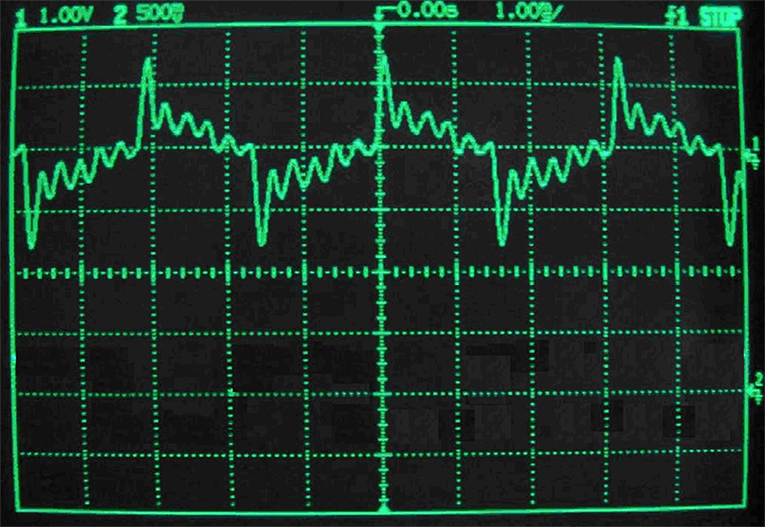
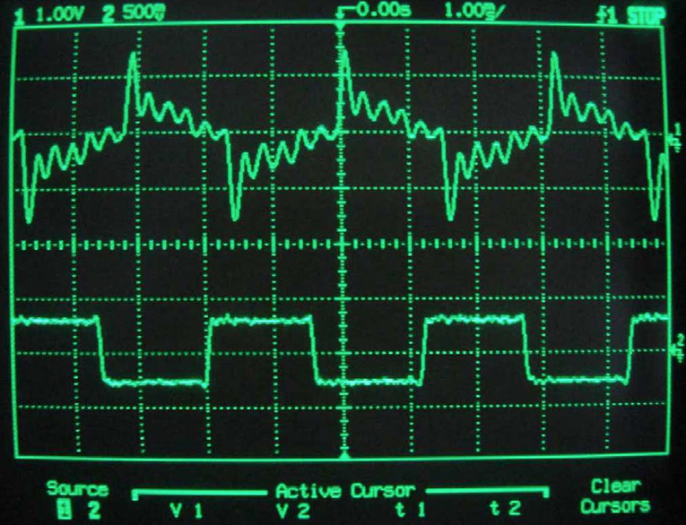

Nice speakers
Studio monitors try to stay fairly even, so a 200 Hz tone and a 2 kHz tone come out closer to the intended loudness.
The actual samples you put in the list and send to the speakers, well the membrane has weight, and has to push a bunch of air, and it cant instantly teleport to the target position.
Even if your target waveform is a square wave, or really a rectangle wave since its longer than it is tall, the membrane probably wont move with perfect square corners. The code asks for instant jumps. The speaker slides toward that target, may overshoot a little, and then settles.
Here are real oscilloscope captures from a loudspeaker square-wave test. A 300 Hz square wave was played through a 12 inch guitar speaker in a box. The measured output does not look like a clean square anymore. Its got slopes, spikes, and ringing.


Measurement images from audioXpress: A Loudspeaker That Can Play Square Waves?
Basically your target waveform is not what comes out of the physical object.
So it operates kind of like a spring, and actually the physical speaker itself has a resolution it can resolve correctly, and that depends on the weight, material, shape of the speaker, the computer that drives it, and even the frequency and volume of that portion of your sample list. Shits complicated.
Basically, big membranes have more weight, and so they cant hit the high notes right. Small speakers have less weight, and so they hit the highs right, but they dont push that much air, but also the coil, or magnet and amplifier and shit can be cheap as fuck so your samples dont come out right.
The upshot is that the speaker will color your sound, so thats cool. Some stupid science bitches put some of that shit in a graph called the frequency response curve, or FRC. It shows how the speaker will actually play the samples you give it. For a given frequency the FRC tells you how loud the speaker will play that frequency.
Studio monitors try to stay fairly even, so a 200 Hz tone and a 2 kHz tone come out closer to the intended loudness.

The original handheld speaker is tiny. Replacement parts are commonly listed around 28 mm and 8 ohms, so the built-in sound is kinda ass. The speaker probably costs like 15 cents.
How to read the graph: the bottom axis is frequency. Left is low pitch, right is high pitch. The vertical axis is how loud the speaker actually plays that frequency. A flat line means the speaker is treating lows, mids, and highs evenly. A lumpy line means some frequencies come out too loud and others come out too quiet.
In the biz when your samples are modified by some other phenomenon we say that my wave is "characterized" by the other thing. That could be a list of samples of voltage values on some device your working with, or in this case sound. So you might say our sick ass song is being characterized by the FRC of the piece of shit Game Boy speaker.
And to make matters worse, these filters are at every step in the chain. The amplifier in the Game Boy, the chip that drives the amplifier, maybe even the code that drives the chip that drives the amplifier if its poorly written.
So basically, youre fucked 10 ways to sunday. Just know that on the computer we can be specific with our samples, but once its out in the world, membrane displacement is more of a suggestion.
More reading: how speaker frequency response is measured, why studio monitors aim for flat response, common Game Boy replacement speaker specs, and where 44.1 kHz came from.
Check out this cool ass wave I made by taking a square wave, and then averaging each spot in the sample list with its neighbor, and doing that filter like 5 times. Then I slowly ramped up the magnitude in the beginning of the wave, then down again at the end.
def square(sample_index, frequency, volume):
time = sample_index / sample_rate
phase = (frequency * time) % 1
if phase < 0.5:
return volume
else:
return -volume
samples = []
# render
for sample_index in range(num_samples):
samples.append(square(sample_index, 220, 0.42))
# filter it over and over
for pass_number in range(5):
filtered = []
for sample_index in range(num_samples):
previous_sample = samples[max(0, sample_index - 1)]
current_sample = samples[sample_index]
next_sample = samples[min(num_samples - 1, sample_index + 1)]
filtered_sample = (previous_sample + current_sample + next_sample) / 3
filtered.append(filtered_sample)
samples = filtered
# add the fade to make the start and stop more smooth.
for sample_index in range(num_samples):
fade_in = sample_index / 2400
fade_out = (num_samples - sample_index) / 2400
fade = min(1, fade_in, fade_out)
samples[sample_index] = samples[sample_index] * fadeThe filtered one sounds a little less harsh right? Something to think about. Play around with ur wave generator. I wont bias you yet. Apply your virgin mind. Theres a whole science out there for waveform generation.